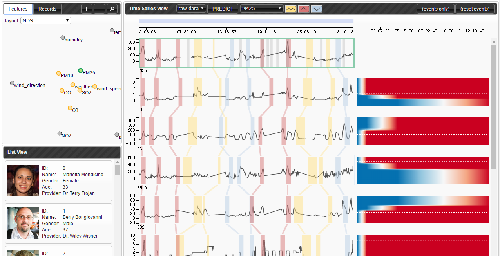

林涵菲 Hanfei Lin
Web前端 · 数据可视化方向教育背景 Education
华东师范大学（ECNU） 2012.9 - 2016.6
- 计算机科学与软件工程学院 · 本科学位
- GPA: 3.6 / 4.0
伊利诺伊大学香槟分校（UIUC） 2017.8 - 今
- 计算机科学 · 硕士在读
专业技能 Skills
JavaScript | Python | Java | C++ | Django | Node. JS | Angular JS | FLASK | html5 | CSS
工作经历 Work Experiences

智能与大数据可视化实验室, 同济大学 （2016年9月 – 2017年6月）
研究助理
- 实现了一个用于异常事件预测分析的可视化系统。
- 允许用户在多维时序数据集上标记事件、选取感兴趣的数据样本和特征作为生存回归模型的输入、使用热力图可视化地展现模型的预测结果。
- 负责前端及部分后端的代码编写。

可视化实验室， 上海纽约大学 （2016年1月 – 2016年9月）
研究助理
- 设计并实现了一个智能可视化系统RCLens，能够使用户实时参与和反馈异常类的检测过程。
- 设计并实现了用户友好界面，与团队所设计的LOFRCD算法无缝对接。在阿里巴巴安全小组的真实网络攻击场景下进行了测试，并被证实与传统的手工检测相比，在检测速度和检测精度方面有了极大提升。
- 负责前端及部分后端的代码编写。

ALM组，软件开发部门，惠普 （2016年1月 – 2016年9月）
软件开发工程师（实习生）
- 参与实现惠普核心软件产品ALM Octane（软件开发生命周期管理系统）的前端部分。
- 参与实现ALM Qot（基于移动端的软件管理系统）的前端部分。
项目经历 Projects

基于Storyline的可视化技术分析与应用 （2015年9月 – 2016年5月）
毕业设计
- 设计并实现了一个用于布局Storyline的横向切片模型， 将聚类概念引入Storyline中，与传统布局方式相比在运行效率与布局效果上都更加优势。
- 获得华东师范大学优秀毕业论文。

过程可视化编译器 （2014年3月 – 2015年3月）
系统设计者与开发者
- 设计并实现了一个过程可视化教学辅助编译器，能够动态地呈现编译过程中每个步骤的结果，并对编译算法在运行时的机理(如：语法分析中的分析栈)也能动态显示。通过一个学期的教学实践，该可视化编译器在《编译原理》课程的教学中起着良好的辅助作用。
- 使用C#语言进行编写。团队共三人。

面向儿童的3D交互式心理沙盘系统 （2014年3月 – 2015年3月）
系统设计者与开发者
- 设计并实现了一个3D交互式心理沙盘，仿真真实沙盘的物品放置以及挖沙功能，额外提供环境切换，录屏功能以及治疗师反馈功能。系统包含双客户端。
- 使用Unity实现3D界面，MySQL进行数据存储，C#进行双客户端编写。团队共五人。
- 项目获得国家级大学生创新训练基金（10000元）以及华东师范大学大夏基金（2000元）支持。
出版作品 Publications
“RCLens: Interactive Rare Category Exploration and Identification”, H. Lin; S. Gao; D. Gotz; F. Du; J. He; N. Cao, in IEEE Transactions on Visualization and Computer Graphics , vol.PP, no.99, pp.1-1
“过程可视化编译器的设计与应用”, 林涵菲，陈希文，梁雨霏，琚小明, 软件工程与应用, 2015, 4(5), 89-95
“A Process-Visible Compiler Aimed for Teaching Assistant”, X. Chen; H. Lin; Y. Liang; X. Ju, in 2015 Conference on Education and Teaching in Colleges and Universities
曾获奖项 Honors
2016 上海市优秀毕业生
2015 国家奖学金
2015 美国大学生数学建模竞赛二等奖
2014 “大夏杯”课外学术科技作品大赛三等奖
2014 Sandisk创新型社会奖学金
2014 优秀学生一等奖学金
2013 优秀学生二等奖学金
其它属性 Attributes
- 典型B型血白羊座 热情而冲动，向往自由，爱挑战，爱创造，不记仇，极强求知欲，脑洞突破天际。
- 最喜欢的人物 灰原哀、巴卫和仓央嘉措
- 最喜欢的书 《红楼梦》《飘》和《护花铃》
- 兴趣爱好 各种奇怪的运动、狼人杀、密室逃脱、唱歌、画画、写小说、吃旺旺仙贝